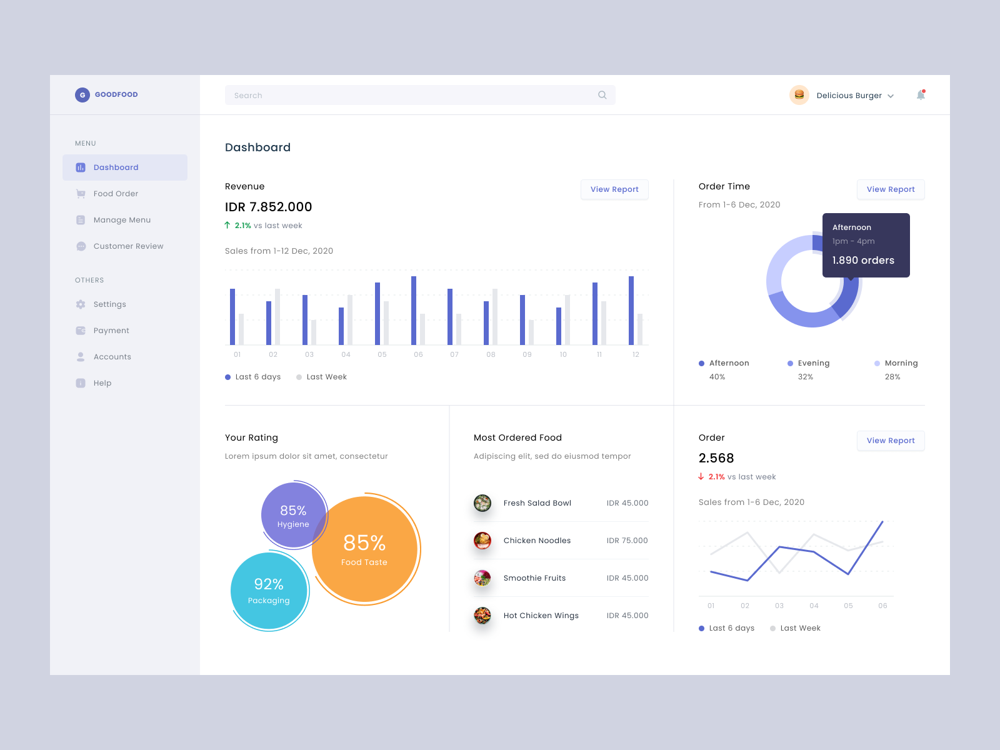
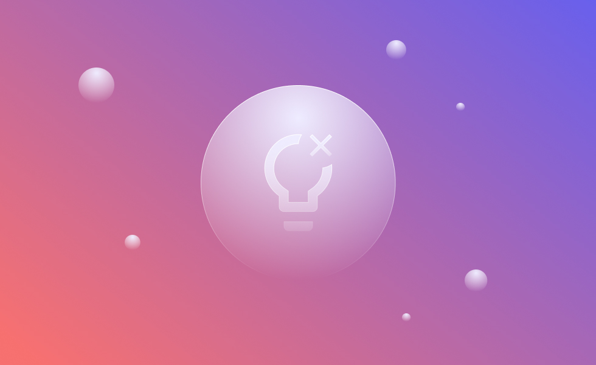

I love to create something simple and clean
A User Interface Designer, currently living in the city of Surakarta, which has a lot of delicious food. Likes to explore designs that are minimalist and have good functionality.
Can spend hours each day exploring designs. You can check out some of my design explorations on Dribbble .
I also like writing on Medium , most of my writings are about how to get started as a UI Designer, some basic tips to make UI Design more attractive, and business design.
Active on Twitter discuss things about the design industry and if you have any questions don't hesitate to mention me on twitter, it will definitely be an interesting chat.
Latest Posts

March 05, 2021
About Creativity Block in UI Designer

March 01, 2021
Choosing the right photos for website design

February 28, 2021
Make a proportional header design
Publication
Mar 10, 2021
How does Nawan sharpen his design intuition?
Design Podcast Tickets
→
Dec 10, 2020
Career journey as a UI designer and build a design studio
Design Chit-Chat with Borrys Hasain
→
Feb 21, 2019
The process of Dwinawan, Cofounder of Paperpillar, in making UI Design
Technology.id
→